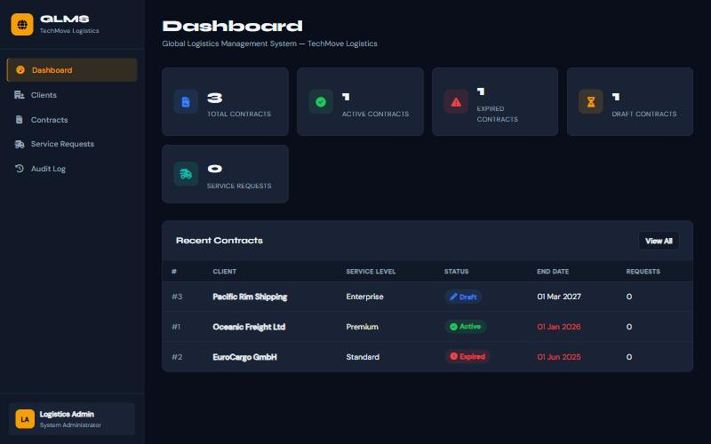

2026 · Solo developer · PROG7311 (Enterprise Application Development)
GLMSLogistics contract management
59passing xUnit tests in CI
3Gang-of-Four patterns
2tiers: REST API + Blazor UI

The problem
A logistics company manages contracts and service requests for international clients. Service requests must never be raised against an inactive or expired contract, every status change must be auditable, and signed agreements need to be stored safely.
What I built
- A REST API (EF Core, SQL Server, Swagger) for clients, contracts, service requests and the audit log.
- A Blazor Server frontend: dashboard, contract hub with date and status filters, PDF uploads, and service requests with a live USD → ZAR conversion.
- A 59-test xUnit suite covering the patterns, validation, currency maths, file checks and an end-to-end workflow on an in-memory database.
Key decisions
Factory
Creates contracts in the correct initial state (Draft or Active), and rejects end dates on or before the start date.
Observer
Every contract status change notifies an observer that writes to the audit log, so auditing can't be forgotten.
Strategy
Composable validation strategies (active status + valid dates) block invalid service requests before they reach the database.
Results
- 59 tests run on every push through GitHub Actions.
- Only genuine .pdf uploads are accepted, with .exe, .php, double extensions and similar rejected.
- A seeded demo database makes the system easy to evaluate.